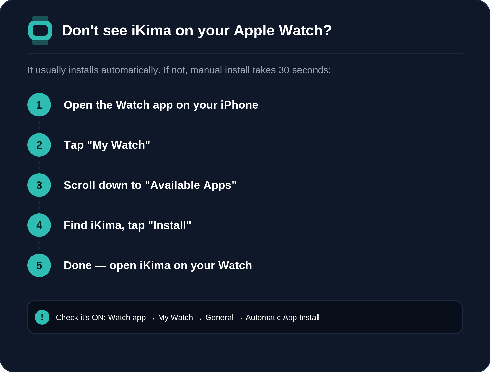
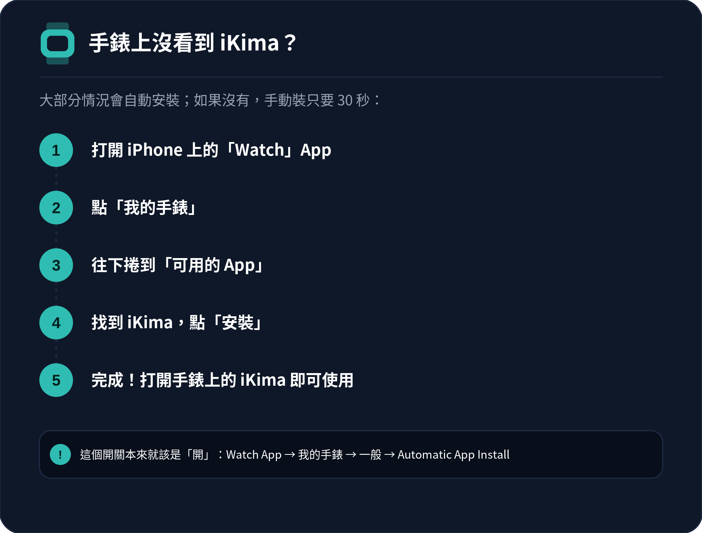

⚡ Quick Setup
⚡ 快速設定
Heart Rate & HRV
心率與 HRV
Why is my heart rate not showing during a session?為什麼練習中沒有顯示心率？
Heart rate requires explicit permission. On your iPhone, go to:
Health → your profile photo → Apps → iKima → turn on Heart Rate
Also make sure you are wearing the Watch snugly on your wrist — the optical sensor needs good skin contact.
心率功能需要明確授權。請在 iPhone 上前往：
健康 → 個人檔案照片 → App → iKima → 開啟心率
也請確認手錶有貼合戴在手腕上——光學感測器需要良好的皮膚接觸。
The heart rate in Session Insight is different from what I see on HomeView — which is correct?練習洞察的心率跟 HomeView 顯示的不一樣，哪個才對？
Both are correct, but from different moments:
- HomeView shows the current live reading (updated every few seconds)
- Session Insight shows a snapshot taken at the start and end of your session
If you check HomeView some time after your session ends, the numbers will naturally differ. This is expected.
兩者都對，只是取樣時間點不同：
- HomeView 顯示的是目前的即時數值（每幾秒更新一次）
- 練習洞察 顯示的是練習開始與結束當下的快照
如果練習結束一段時間後才看 HomeView，數字自然會不同，這是正常現象。
What is HRV and how is it calculated?HRV 是什麼？怎麼計算的？
HRV (Heart Rate Variability) measures the variation in time between heartbeats. A higher SDNN value generally indicates a more relaxed, resilient nervous system.
iKima reads the most recent SDNN sample from the past 7 days in Apple Health. Apple Watch measures HRV automatically during sleep or rest — it is not calculated in real time during a session.
HRV（心率變異性）衡量的是心跳間隔時間的變化程度。SDNN 數值越高，通常代表神經系統越放鬆、韌性越好。
iKima 讀取的是 Apple 健康中過去 7 天內最新的一筆 SDNN 樣本。Apple Watch 會在睡眠或靜止時自動測量 HRV——並不是在練習當下即時計算的。
My HRV seems very low — is that normal?我的 HRV 看起來很低，這正常嗎？
HRV varies enormously between individuals (15–100+ ms is a normal range). It is also affected by age, sleep quality, stress, hydration, and recent exercise.
What matters most is your personal trend over time, not comparison with others. Consistent breathing practice has been shown to improve HRV over weeks.
HRV 因人而異，差異很大（15–100+ ms 都算正常範圍），也會受年齡、睡眠品質、壓力、水分攝取與近期運動量影響。
比起跟別人比較，更重要的是觀察自己長期的趨勢變化。持續練習呼吸，已證實能在數週內改善 HRV。
Sessions & Breathing
練習與呼吸
The session ended before I finished — what happened?練習還沒結束就自己停止了，發生什麼事？
iKima runs the exact number of cycles you selected. When all cycles complete, the session ends naturally and moves to the mood check-in screen.
If the session ended unexpectedly, make sure the Watch app has not been force-quit. If the issue persists, please contact us.
iKima 會確實執行你選擇的輪數。所有輪數完成後，練習會自然結束並進入情緒記錄畫面。
如果練習是非預期地中斷，請確認手錶 App 沒有被強制關閉。如果問題持續發生，歡迎聯絡我們。
Can I change the speed of the breathing pattern?可以調整呼吸節奏的速度嗎？
Yes. On the pattern selection screen, tap the pace selector before starting. Options are Slow, Standard, and Fast — each adjusts the duration of each breath phase.
可以。在選擇呼吸法的畫面，開始前點一下節奏選擇器。有慢、標準、快三種選項，會調整每個呼吸階段的長度。
Will the session continue if my Watch screen turns off?手錶螢幕暗掉後，練習還會繼續嗎？
Yes. iKima uses an Extended Runtime Session to keep the haptic timer running even when the screen is off. You will still feel the tap guidance on your wrist.
會繼續。iKima 使用 Extended Runtime Session，即使螢幕暗掉，震動計時仍會持續運作，你還是會感覺到手腕上的震動引導。
My session data is not showing in the Statistics tab.練習紀錄沒有出現在統計頁面。
Session data is saved on your Watch using SwiftData and synced to your iPhone automatically. If statistics appear missing, try opening the iPhone app — this triggers a sync. Data may take a few seconds to appear after a session ends.
練習資料會用 SwiftData 儲存在手錶上，並自動同步到 iPhone。如果統計資料看起來不見了，試著打開 iPhone App——這會觸發一次同步。練習結束後，資料可能需要幾秒鐘才會出現。
App & Account
App 與帳號
Don't see iKima on your Apple Watch?手錶上沒看到 iKima？
In most cases, installing iKima on your iPhone automatically installs the Watch app within a few minutes — no action needed. If it still doesn't appear (common after deleting and reinstalling the app), install it manually:
大部分情況下，手機裝好 iKima 後，手錶版會在幾分鐘內自動安裝，不需要額外動作。如果手錶上還是沒看到（刪除後重裝時偶爾會發生），照下面步驟手動安裝：


Do I need an account to use iKima?使用 iKima 需要帳號嗎？
No account is required. iKima's core breathing sessions work entirely on-device with no login and no cloud sync. Optional Premium features (full HR trends and insights) are available as an in-app subscription — the account-free, on-device design applies regardless of whether you subscribe.
不需要帳號。iKima 的核心呼吸練習完全在裝置上運作，不需要登入、不需要雲端同步。選配的 Premium 功能（完整心率趨勢與洞察）以 App 內訂閱方式提供——無論是否訂閱，都不需要帳號，資料都留在裝置上。
Does iKima store my health data in the cloud?iKima 會把我的健康資料存到雲端嗎？
No. Heart rate and HRV data never leave your device. All computation is on-device. Only anonymised, non-identifiable session statistics (pattern used, duration, completion rate) may be included in aggregate analytics — no raw biometric values are transmitted.
不會。心率與 HRV 資料絕不會離開你的裝置，所有運算都在裝置本機完成。只有匿名、無法識別個人身分的統計資料（使用的呼吸法、時長、完成率）可能會用於整體分析——不會傳送任何原始生理數值。
How do I delete my data?如何刪除我的資料？
To delete all session records: open the iPhone app → History → swipe left on individual sessions to delete, or delete and reinstall the app to clear all local data.
Heart rate data in Apple Health is managed separately via the Health app on your iPhone.
要刪除所有練習紀錄：打開 iPhone App → History → 左滑個別練習即可刪除，或直接刪除並重新安裝 App 以清除所有本機資料。
Apple 健康裡的心率資料則是透過 iPhone 上的「健康」App 另外管理。
Which Apple Watch models are supported?支援哪些 Apple Watch 型號？
iKima requires watchOS 10 or later (Apple Watch Series 4 and newer). An iPhone running iOS 17+ is required as a companion.
Heart rate monitoring requires a Watch model with an optical heart sensor — all supported models include one.
iKima 需要 watchOS 10 或以上（Apple Watch Series 4 及更新機型）。搭配使用需要 iOS 17+ 的 iPhone。
心率監測需要具備光學心率感測器的手錶機型——所有支援的機型都內建此感測器。
Still need help?
還需要協助？
We usually reply within one business day.
我們通常會在一個工作天內回覆。
Email Support寄信給我們